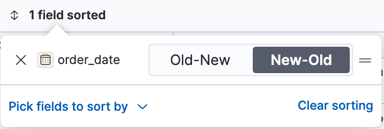
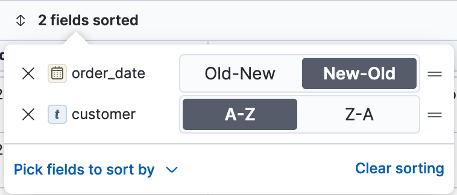
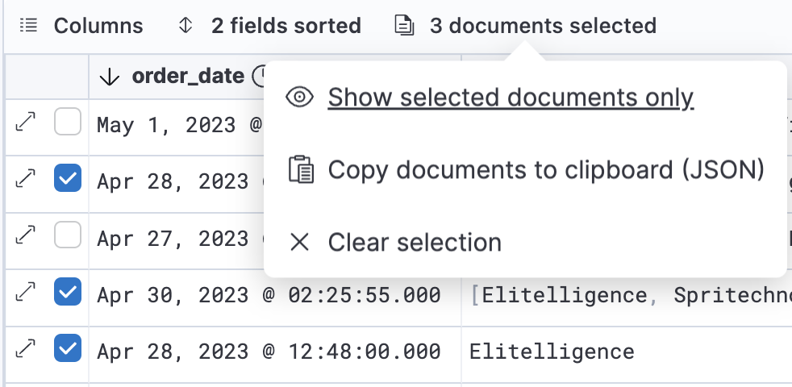
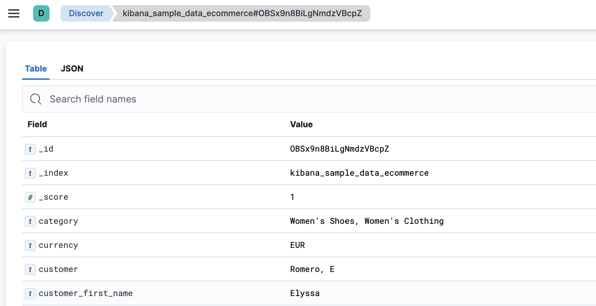
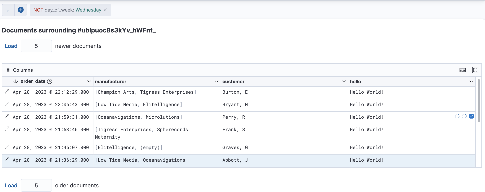

Explore your documents
editExplore your documents
editFine tune your explorations by customizing Discover to bring out the the best view of your documents. Adjust the chart height, modify the document table, and look inside a document.

Hide or resize the chart
editHide or resize the chart for a better fit.
-
To turn off the display of the chart, click
 to open the Chart options menu, and then click Hide chart.
to open the Chart options menu, and then click Hide chart.
-
To change the chart height, drag the resize handle
 to the size you want.
The chart size is saved in your browser.
to the size you want.
The chart size is saved in your browser.
- To reset the height, open the Chart options menu, and then select Reset to default height.
Modify the document table
editCustomize the appearance of the document table and its contents by resizing the columns and rows, sorting and modifying the fields, and filtering the documents.
Reorder and resize the columns
edit- To move a single column, click its header. In the dropdown menu, click Move left or Move right.
- To move multiple columns, click Columns. In the pop-up, drag the column names to their new order.
-
To resize a column, drag the right edge of the column header until the column is the width that you want.
Column widths are stored with a saved search. When you visualize saved searches on dashboards, the saved search appears the same as in Discover.
Adjust the row height
editTo set the row height to one or more lines, or automatically
adjust the height to fit the contents, click the row height icon
 .
.
Sort the fields
editSort the data by one or more fields, in ascending or descending order. The default sort is based on the time field, from new to old.
To add or remove a sort on a single field, click the column header, and then select the sort order.
To sort by multiple fields:
-
Click the field sorted option.
 -
To add fields to the sort, select their names from the dropdown menu.
By default, columns are sorted in the order they are added.
 - To change the sort order, select a field in the pop-up, and then drag it to the new location.
Edit a field
editChange how Kibana displays a field.
- Click the column header for the field, and then select Edit data view field.
-
In the Edit field form, change the field name and format.
For detailed information on formatting options, refer to Format data fields.
Filter the documents
editNarrow your results to a subset of documents so you’re comparing just the data of interest.
- Select the documents you want to compare.
-
Click the documents selected option, and then select Show selected documents only.

Set the number of rows per page
editTo change the numbers of rows you want to display on each page, use the Rows per page menu. The default is 100 rows per page.

Go inside a document
editDive into an individual document to inspect its fields, set filters, and view the documents that occurred before and after it.
-
Click the expand icon
 .
.You can view the document in two ways. The Table view displays the document fields row-by-row. The JSON (JavaScript Object Notation) view allows you to look at how Elasticsearch returns the document.

- In the Table view, scan through the fields and their values, or search for a field by name.
-
When you find a field of interest, hover your mouse over the Actions column to:
- Filter the results to include or exclude specific fields or values.
- Toggle the field in or out the document table.
- Pin the field so it stays at the top.
- To navigate to the next and previous documents, click the < and > arrows at the top of the view.
-
To create a view of the document that you can bookmark and share, click Single document.
The link is valid for the time the document is available in Elasticsearch. To create a customized view of the document, you can create your own plugin.
-
To view documents that occurred before or after the event you are looking at, click Surrounding documents.
Documents are displayed using the same set of columns as the Discover view from which the context was opened. The filters you applied are also carried over. Pinned filters remain active, while other filters are copied in a disabled state.
